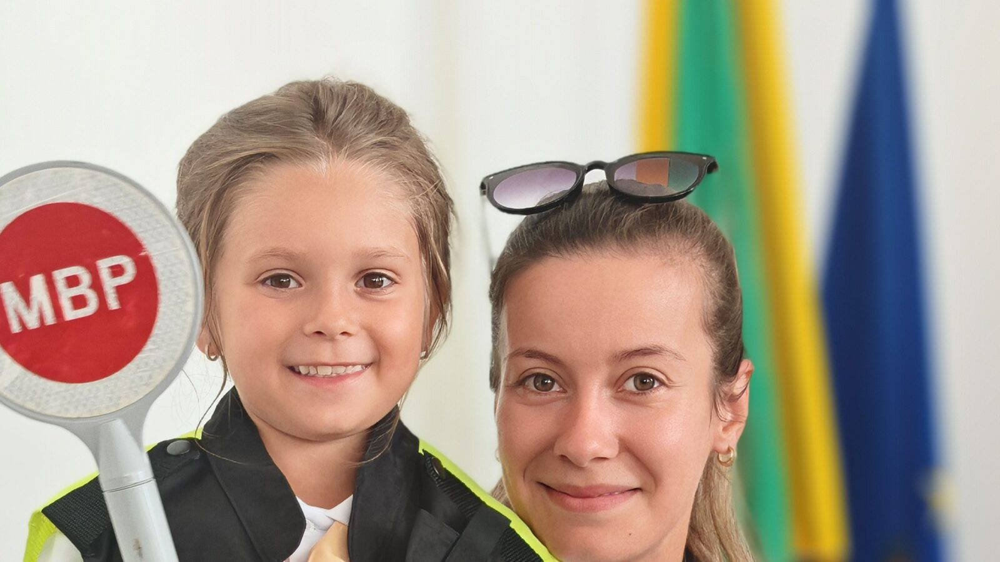

Агресията не е детска игра.
Aggression is not child’s play.
Удар в междучасието, подигравка в групата, заплаха в съобщение. Агресията в детския свят има много лица — и когато детето е жертва, и когато то самото посяга. Тук ще намерите как се разпознава, как се реагира и към кого да се обърнете — веднага.
A blow at break time, mockery in the group chat, a threat in a message. Aggression in the world of children has many faces — when a child is the victim, and when a child is the one lashing out. Here you will find how to recognise it, how to respond and whom to turn to — straight away.

Какво е „Спаси дете“
What “Save a child” is
„Спаси дете“ е информационна платформа, насочена към превенция и противодействие на престъпления, свързани с насилие и агресия от и към деца.
“Save a child” is an information platform for preventing and countering crimes involving violence and aggression by and against children.
Сайтът има за цел да предостави полезна и достъпна информация за деца, родители и учители за разпознаването на рискови ситуации, както и възможност за лесно и бързо подаване на сигнали за престъпления срещу или от деца, която да достигне бързо и адекватно до съответната областна дирекция на МВР и до компетентните институции на всички нива в страната.
The site sets out to give children, parents and teachers useful and accessible information for recognising situations of risk, together with a straightforward and fast way of reporting crimes against or by children, so that the report reaches the relevant regional directorate of the Ministry of Interior and the competent institutions at every level in the country quickly and appropriately.
Агресията в детския свят
Aggression in the world of children
Не е само онлайн и не е само в училище. Агресията идва от три посоки и всяка иска различен отговор.
It is not only online and not only at school. Aggression comes from three directions, and each calls for a different answer.
Когато детето е жертва
When the child is the victim
Побой, заплахи, изнудване, подигравки, изключване от групата, разпространение на снимки и записи. Насилие може да идва и от възрастен — вкъщи, в училище или онлайн.
Beatings, threats, extortion, mockery, exclusion from the group, the spreading of photos and recordings. Violence can also come from an adult — at home, at school or online.
Когато детето посяга
When the child lashes out
Зад агресивното поведение почти винаги стои нещо друго — страх, безсилие, преживяно насилие, подражание. Детето, което удря, също има нужда от помощ, а не само от наказание.
There is almost always something behind aggressive behaviour — fear, powerlessness, violence already experienced, imitation. The child who hits needs help too, not only punishment.
Когато класът участва
When the class takes part
Тормозът рядко е между двама. Около него има подбудители, помощници и мълчаливи свидетели. Той спира тогава, когато групата спре да го поддържа.
Bullying is rarely between two people. Around it there are instigators, assistants and silent witnesses. It stops when the group stops sustaining it.
Едно дете често минава и през трите роли. Затова сайтът не дели децата на „лоши“ и „добри“, а говори за поведение, което може да се промени.One child often passes through all three roles. That is why this site does not divide children into “bad” and “good”, but speaks about behaviour that can change.
Посланието
The message
„Агресията е сигнал — за проблем, страх, умора, емоция, загуба на контрол.““Aggression is a signal — of a problem, of fear, of exhaustion, of emotion, of a loss of control.”
Зад агресивното поведение почти винаги стои нещо друго. Това не оправдава насилието — но обяснява защо наказанието само по себе си не помага. Работещата защита започва с разпознаване, разговор и навременна намеса на възрастен, на когото детето вярва.
There is almost always something else behind aggressive behaviour. That does not excuse violence — but it explains why punishment on its own does not help. Effective protection starts with recognition, conversation and the timely involvement of an adult the child trusts.
Четири пътя напред
Four ways forward
Изберете това, което ви е нужно точно сега.
Choose what you need right now.
Случва се сега
It’s happening now
Телефони, институции и онлайн канали за сигнал — подредени по спешност.
Phone numbers, institutions and online reporting channels — ordered by urgency.
Потърси помощGet helpРазпознай тормоза
Recognise bullying
Видовете агресия, признаците у детето и как да реагирате правилно.
The types of aggression, the signs in a child and how to respond properly.
Виж повечеLearn moreСъвети
Advice
Отделни правила за деца, за родители и за учители — кратки и приложими.
Separate rules for children, parents and teachers — short and usable.
Към съветитеSee the adviceПолезни връзки
Resources
Кампании, програми и изследвания на МВР, УНИЦЕФ и партньорски организации.
Campaigns, programmes and research by the Ministry of Interior, UNICEF and partner organisations.
РазгледайBrowseКакво показва изследването
What the research shows
Данни на УНИЦЕФ България, Националния статистически институт и Държавната агенция за закрила на детето.
Figures from UNICEF Bulgaria, the National Statistical Institute and the State Agency for Child Protection.
от децата в България са преживели някаква форма на насилие до 18-годишна възраст.
of children in Bulgaria have experienced some form of violence before the age of 18.
са засегнати от емоционално (психическо) насилие — най-разпространената форма.
are affected by emotional (psychological) violence — the most widespread form.
е разпространението на физическото насилие сред подрастващите.
is the prevalence of physical violence among adolescents.
или едно на всеки седем деца съобщава, че е било обект на онлайн тормоз.
— one in every seven children — report having been subjected to online bullying.
Данните идват от различни изследвания с различна методология и обхват. Подробностите и източниците са в раздела „Агресия и насилие“.The figures come from different studies with different methodologies and scope. The details and the sources are in the Aggression and violence section.
От институциите
From the institutions
Стартира шестото издание на националната превантивна програма „Детско полицейско управление“
The sixth edition of the national preventive programme “Children’s Police Department” begins
В училища в цялата страна малките доброволци положиха тържествена клетва и заявиха готовност да спазват Етичния кодекс на Детското полицейско управлен…
In schools across the country the young volunteers took their oath and pledged to follow the Code of Ethics of the Children’s Police Department.…
МВР е партньор на кампанията „Убий скоростта, спаси дете“
The Ministry of Interior is a partner of the campaign “Kill the speed, save a child”
Кампанията е насочена към повишаване на вниманието към безопасността на движението по пътищата и превенцията на пътния травматизъм сред децата.…
The campaign is aimed at raising attention to road safety and at preventing road injuries among children.…
Министър Демерджиев даде началото на инициативата „Малките големи герои“
Minister Demerdzhiev launches the “Little Big Heroes” initiative
Министерството на вътрешните работи ще поощрява добрия пример на деца и младежи, проявили гражданска доблест и отговорност.…
The Ministry of Interior will recognise children and young people who have shown civic courage and responsibility.…
Видяхте нещо незаконно в интернет?
Seen something illegal online?
Подайте сигнал до дирекция „Киберпрестъпност“ при ГДБОП. При непосредствена опасност за дете — 112.
Report it to the Cybercrime Directorate at GDBOP. If a child is in immediate danger — call 112.